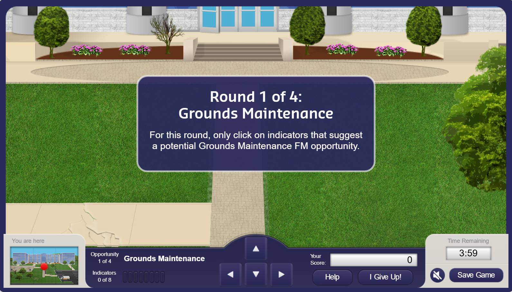
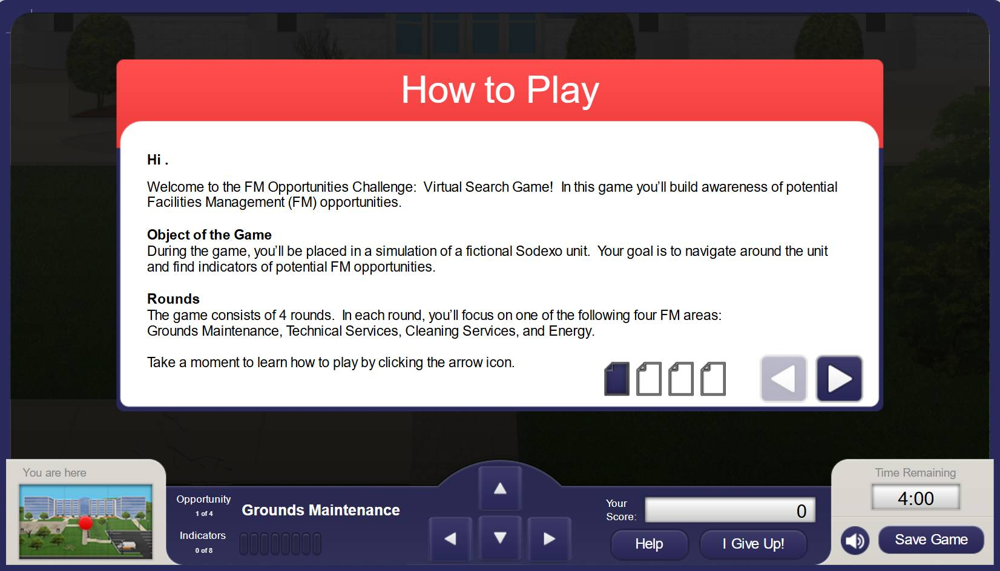
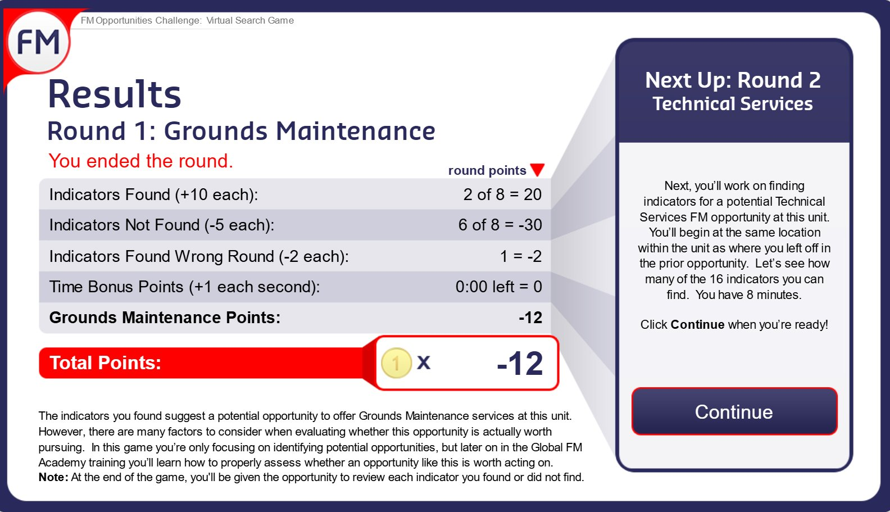
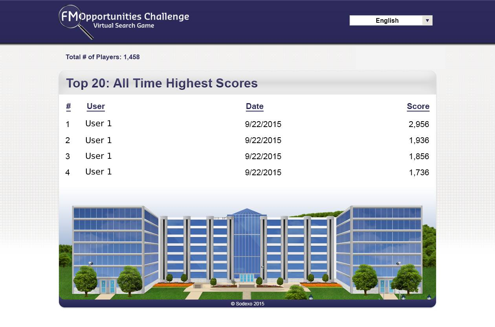

Case Study
Learning Game Development
A performance-based game that drops learners into a realistic environment to explore, decide, and compete — built in Articulate Storyline with a custom HTML5 / PHP / MySQL leaderboard.

The Challenge
The facility-management training program needed a learning experience that went beyond a linear, click-and-read course. The goal was a performance-based game where learners could explore a realistic environment, make decisions, get feedback, and apply their knowledge — with an element of friendly competition.
Our Approach
I co-developed the game with a colleague. We shaped the overall experience design and game mechanics together; my colleague led the graphic design and user interface, and I led development in Articulate Storyline and built the companion leaderboard. We collaborated closely throughout — trading ideas, fine-tuning, and iterating on the experience.
The game was part of a blended program that paired the digital experience with live facilitated training. The design leaned on exploration, contextual decision-making, scoring, time pressure, progress indicators, and feedback — so it felt more like a real task than a course.
Game Design & Development
Articulate Storyline
Built the core game — custom navigation, movement, scoring, timing, progress indicators, feedback, and game logic.
Game Mechanics
Exploration, intentional distractors, point scoring, time pressure, contextual navigation, feedback, and an “I give up” mechanic.
Graphic Design / UI
Planned the visual direction together with my colleague, who led the graphic design and user-interface work.
Leaderboard Development
Built the companion leaderboard with HTML5, CSS, JavaScript, jQuery, PHP, and MySQL to store and display player scores.
Interactive Game Mechanics
A gate screen gave starting instructions. Custom navigation let learners move through the environment with on-screen arrows or the keyboard. They explored and made educated guesses, with specific feedback along the way. Distractors and wrong choices were included on purpose, so learners had to stay focused on the task and context. A timer created urgency, progress indicators showed how far along they were, and a point system drove friendly competition. A score breakdown followed each of the four rounds, with a final tally at the end.


Leaderboard & Technical Implementation
The companion leaderboard extended the experience beyond the Storyline file. I built it with HTML5, CSS, JavaScript, jQuery, PHP, and MySQL. A JavaScript trigger sent player data to the MySQL database, so scores could be stored and retrieved for friendly competition across the organization — giving the game a persistent competitive element outside the course itself.

Recognition & Impact
- Showcased at the Learning Solutions 2016 Conference DemoFest.
- Presented in a hands-on session at DevLearn 2016.
- Later featured by Articulate in their Rapid E-Learning Blog.
- Backed by a custom leaderboard that tracked scores organization-wide for ongoing friendly competition.
What I Learned
This project reinforced the value of combining learning design, game mechanics, visual design, and custom development. It showed how Storyline could support a highly interactive, game-based experience when paired with variables, triggers, motion paths, JavaScript, and a separate web-based leaderboard.